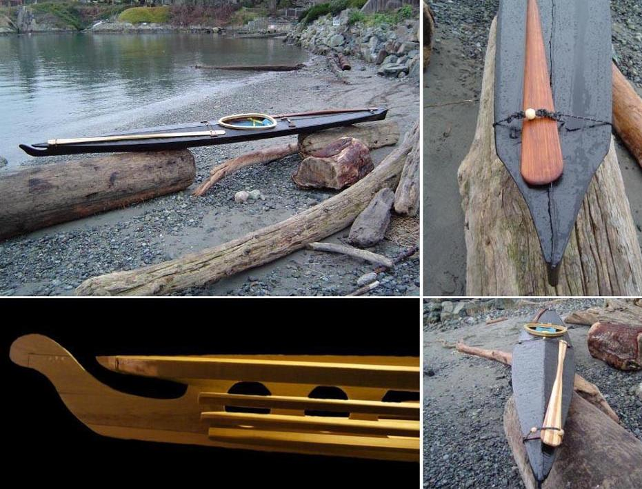

| Nikumi by Rich Poulin (CA) | Menu Previous Page Next Page |
|

Rich, from British Columbia, Canada displays his Nikumi baidarka. The cross sections are 5/8" thick birch ply with WRC stringers.
The Skin is 8oz nylon with Varathane Colours in Plastic enamel. His main paddle is laminated WRC & Yellow Cedar, storm paddle is single piece WRC. The boat weighs 36 lbs.
|
|